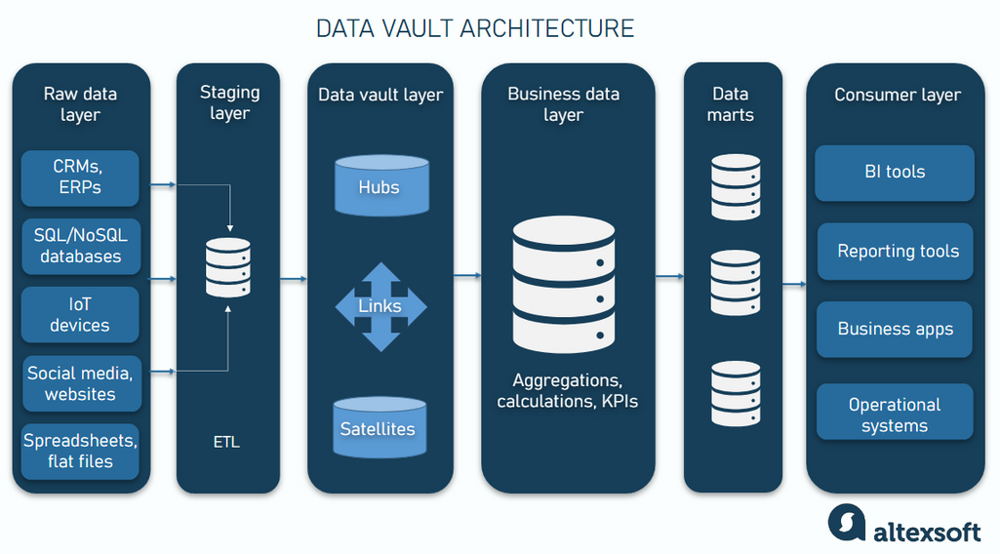

Compass: Compala to Compass Data Pipeline
Introduction
This project extends the Compala Data Vault framework into a full enterprise data platform,
where curated and transformed data is delivered into a centralized warehouse called Compass.
The architecture follows a medallion approach, ensuring data progresses through structured layers
from raw ingestion to refined, business-ready datasets.
Data Flow & Architecture
- Data from Compala Hub and Satellite tables is exposed through a source view
- Transformation is applied based on business requirements
- Data is loaded into the Compass warehouse
- Dimensional data is structured into dimension tables
- Transactional data from external systems is merged using primary keys
- Materialized views are created on top of dimensional data for performance optimization
- Performance improved by 20–30% compared to traditional data processing methods

Analytics & Reporting Layer
- Materialized views are leveraged in datamarts
- Used for business reporting such as client contribution analysis
- Quarterly aggregations provide strategic insights for stakeholders
Reliability & Data Processing
- Raw files and parquet data are stored in Amazon S3
- Data is reprocessed from storage in case of failures
- Implemented email alerts and monitoring for pipeline failures
- Issues are proactively identified and communicated before impacting stakeholders
Automation & Optimization
- Automated workflows using scripts and Oracle-based configurations
- Reduced 80% of manual intervention in data processing
- Improved consistency, reliability, and processing speed
Ownership & Impact
I owned the pipeline end-to-end from Compala to Compass, ensuring seamless data movement,
transformation, and availability for downstream analytics. This resulted in:
- Improved data reliability and consistency
- Faster issue resolution through proactive monitoring
- Significant reduction in manual efforts
- High-quality insights for client contribution and business decisions
💡 Key Outcome: A robust, automated, and scalable data platform delivering trusted data for enterprise reporting and analytics.